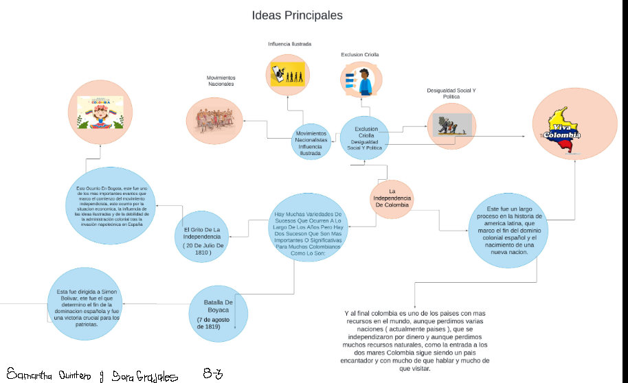

CIENCIAS SOCIALES
punto 1

punto 2
- La identidad Colombiana es todo aquello que nos representa como Colombianos,con
eso quiero decir;razas,idioma,creencias y religiones,constumbres y etnias.
- En Colombia creo que hemos perdido un poco de nuestra identidad,pues cada vez
vemos más colombianos que se averguenzan de sus costumbres y antepasados y
así mismo vemos muchas personas que quieren ser como los extranjeros o
europeos y prefieren representar otras partes del mundo que las de nuestras tierra,
creo que las personas de Colombia nos deberiamos sentir muy orgullosos de todos
aquellos que lucharon por crear nuestra identidad,pues son ellos los que nos han
forjado con buenas costumbres,gente trabajadora y de admirar. Disfrutar de
nuestros pueblos,nuestras fiestas,carnavales,ríos,montañas,lenguajes y todo
esto es lo que nos hace sentir orgullosos de ser COLOMBIANOS y debemos
siempre honrar y representar nuestra tierra con la frente en alto,con orgullo y
admiración. La identidad la forjamos con las enseñanzas de nuestros antepasados
y con la educación de los presentes y de nosotros depende seguir cultivando ese
amor por nuestra patria llamada Colombia.